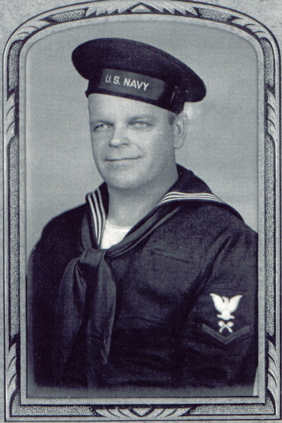

Myron S. Wogsland
1903 - 1979
Myron S. Wogsland was born 15 November, 1903 in New Hope, WI. He served in the US Navy during WWII. Thereafter he worked in Wisconsin in various jobs as a laborer. Myron never married, and he died in Iola on January 12th, 1979.

Myron in his naval uniform during WWII
Parents:
Anne Amundson
1879 - 1953
Carl Oscar Wogsland
1870 - 1946
Offspring:
NONE
References:
1. 22 Jan 1979
Daily Jefferson County Union
Obituary
2. Barb Wogsland
Last changed on 2 August 2004 by
Bradley James Wogsland
.